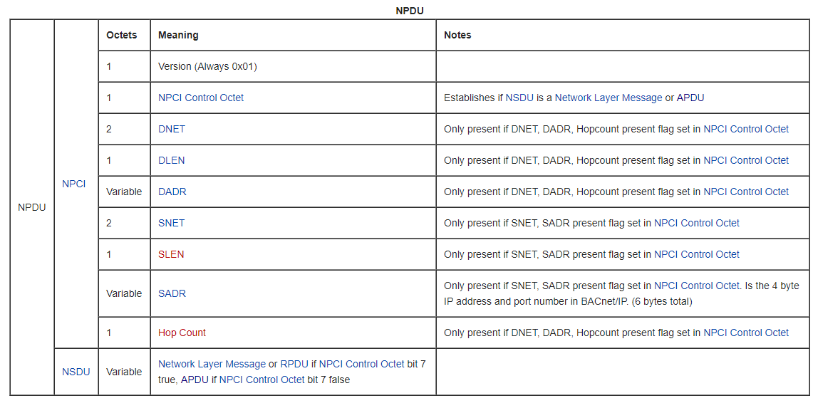
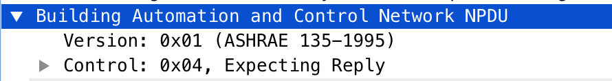
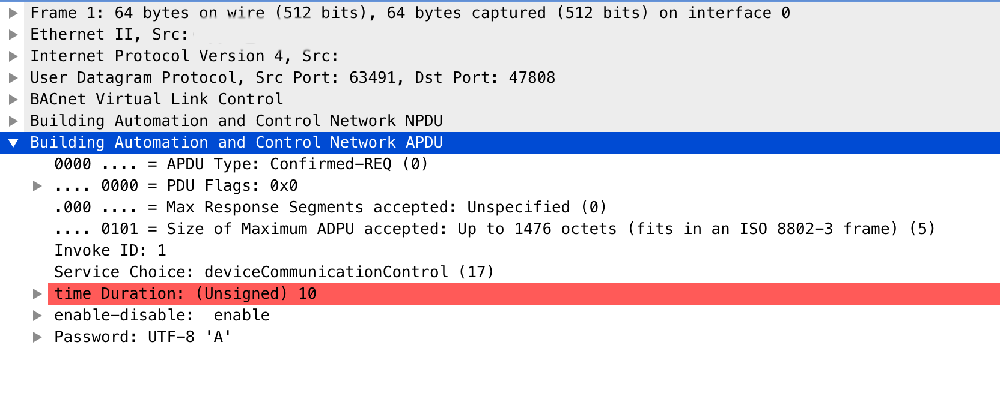

Is there an increase of interest and focus in Cybersecurity referring to Industrial Control Systems (ICSs), not only PLCs, HMIs, RTUs and sensors, there are other elements like chillers, industrial refrigeration, fire detection, fire suppression, energy storage, HVACs, etc. which can be managed through the BACnet protocol.
Usually are referenced under the term “Intelligent Buildings”, however, their use is neither exclusive to them nor is it something relatively new. The building management is given by the acronym BMS, Building Management System and must be distinguished between residential buildings or industrial buildings. In general, BMS systems integrate a set of subsystems in charge of lighting, fire, alarm, elevator, ventilation, temperature, etc. control systems. Although many of them are common to both environments we cannot say that they are similar since the applications and scope are different.
These systems must communicate with each other for their own operation and management. One of the protocols used is BACnet (Buiding Automation Control Network) a Data Communication Protocol for Building Automation and Control Networks approved by the ASHRAE Standards Committee. In June 1987 the American Society of Heating, Refrigeration and Air-conditioning Engineers (ASHRAE) set up the Standard Project Committee 135 (SPC 135) to develop a data communications protocol for Building, Automation and Control Networks (BACnet). As well as becoming a US national standard in 1995 (ASHRAE/ANSI 135-1995) and then updated in 2001, in many countries it also became an ISO standard 16484-5 in January 2003. BACnet also became a European standard CEN TC 247 in 2003.
BACnet has been designed specifically to meet the communication needs of building automation and control systems for applications such as heating, ventilating, and air-conditioning control, lighting control, access control, and fire detection systems. The BACnet protocol provides mechanisms by which computerized equipment of arbitrary function may exchange information, regardless of the particular building service it performs. As a result, the BACnet protocol may be used by head-end computers, general-purpose direct digital controllers, and application specific or unitary controllers with equal effect.
Like many others, each BACNet device is a combination of hardware and software, like devices working as controllers, gateways or user interfaces. Each of them has a unique identifier or instance number that identifies and differentiates them from those existing in the network apart from others with information regarding the inputs and outputs that these devices monitors and controls.
In BACnet we can find 3 differentiated concepts, Objects, Properties and Services, all the information contained within a BACnet device is ordered as objects, which makes it a protocol oriented precisely to this, to objects. Each “Object” represents a component of the device itself or a set of information that can be requested by another through other protocols or layers such as Ethernet, IP, RS-485, etc. The protocol defines more than 50 types of objects for the most common uses.
BACnet
BACnet was designed to allow communication of building automation and control systems for applications such as heating, ventilating, and air-conditioning control (HVAC), lighting control, access control, and fire detection systems and their associated equipment. The BACnet protocol provides mechanisms for computerized building automation devices to exchange information, regardless of the particular building service they perform.
BACnet is a communications protocol for Building Automation and Control (BAC) networks UDP based and contains 3 main headers the BVLC, NPDU and APDU.
A request to BACnet passes down through the lower layers of the protocol stack in the local device, this process can be observed in the next image Source.

The 3 headers can be examined in the BACnet Wiki

BVLC (BACNet virtual link control): 4 bytes
The firts byte defines the type, in this case bacnet/ip 0x81, the second one defines the function 0x0a, and the last 2 bytes defines the length of the whole packet BACnet Wiki:
- The firts byte defines the type: bacnet/ip 0x81
- The second byte defines the function 0x0a (ORIGINAL_UNICAST_NPDU = 10)
- The last 2 bytes defines the length of the whole packet

- NPDU Function:

As we can see in the BACnet packet the UDP Port number used by BACnet communications over IP is 47808:

NPDU (Network layer protocol data unit): 2 bytes
The NPDU consists of a NPCI followed by a NSDU. BACnet Wiki
According bacnetwiki this is the representation, but be careful here, in practice the headers is just 2 bytes, Version (Always 0x01) and NPCI Control Octet:

NPDU Layer:

APDU (Network layer protocol data unit): 2 bytes
BACnet APDUs carry the Application Layer parameters. The maximum size of an APDU is specified by a device’s Max_APDU_Length_Accepted, be careful with that, otherwise you will face malformed packet issues. BACnet APDU

Testbed
If we want to create our own lab and scenario we can install the OpenSource BACnet Protocol Stack and test the connectivity to BACnet port, we need:
- The Free or Open Source Software BACnet Stack
- A BACNet port open UDP 47808
$ sudo apt-get install -y build-essential
$ sudo apt-get install subversion
$ svn checkout svn://svn.code.sf.net/p/bacnet/code/trunk/bacnet-stack bacnetServer
$ cd bacnetServer
$ make clean all
$ demo/server/bacserv
CVE-2023-51773: BACnet Stack before 1.3.2 has a decode function APDU buffer over-read in bacapp_decode_application_data in bacapp.c.
Disclosure Timeline
- 20/10/2023 Discovered vulnerability and developed baseline proof-of-concept.
- 20/12/2023 Reported to https://sourceforge.net/p/bacnet/bugs/85/
- 22/12/2023 Asked for a CVE and coordinated disclosure.
- 25/12/2023 Mitre response and CVE assigned: CVE-2023-51773